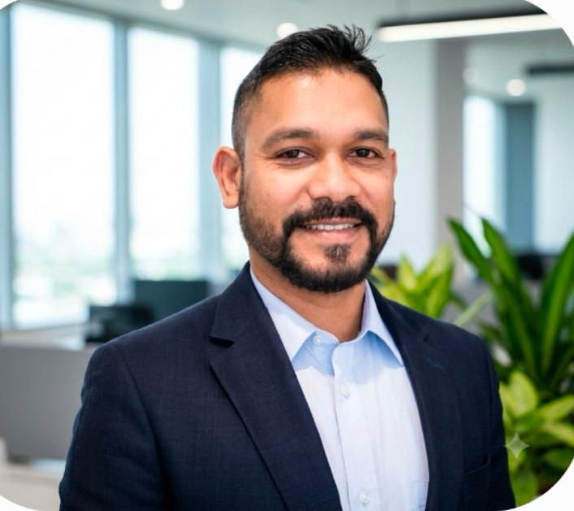

Engineering & sustainability
Clement Fernandez
Clement is an Electrical and Electronics Engineer with an MBA in Marketing, combining technical knowledge with strong commercial and management expertise. He is a Project Management Professional and IEMA certified in carbon accounting and reduction, with strong capabilities in project delivery, environmental management and sustainability.
Read full profileShow less — Clement Fernandez
His international experience spans the UK, the Middle East and China, covering procurement, supply chain management, electrical and electronic systems, and sustainable energy.
Clement brings a structured approach to business planning and project execution, with a focus on quality, cost efficiency and long-term value. His expertise in Environmental, Social and Governance (ESG) practices and carbon reduction supports responsible sourcing and the development of sustainable business solutions.